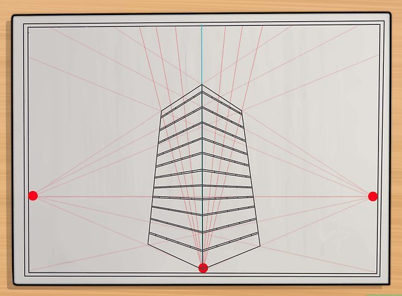

how to draw
selamat datang di kelas three point
prespektif tiga titik adalah sudut pandang yang diambila dari bawah ke atas
three point
berikut adalah langkah-langkah membuat prespektif three point perhatikan dengan seksama ya
pertama butlah tiga titik di sudut yang ingin di tarik garis
mulailah membuat sketsa dari menarik garis lurus dari titik yang kamu buat

mulailah membuat bangunan dengan menarik garis vertikal tapi mengunakan patokan garis miring dari tarikan ketiga titik

selamat mencoba....:v
trimakasih telah berkunjung mohon maaf kiranya ketika banyak kekurangan dari segalahal